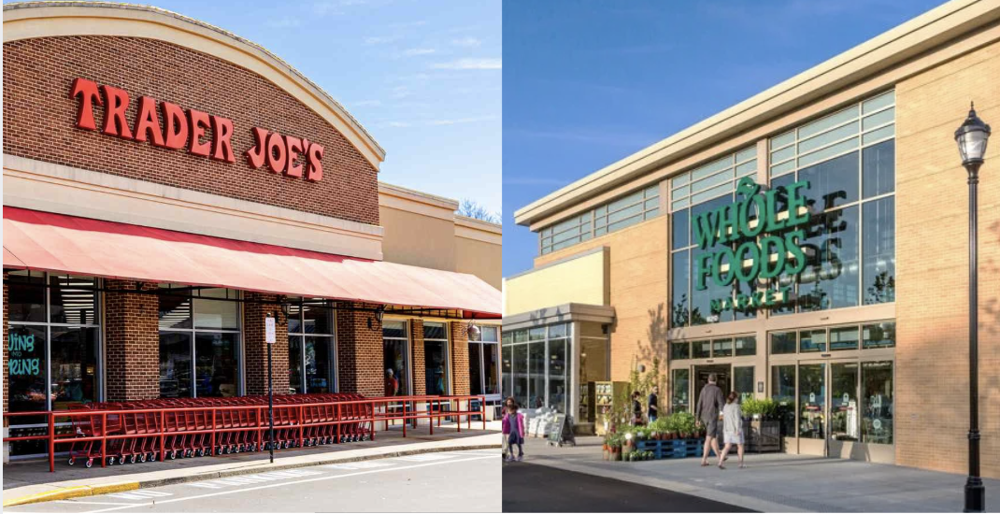
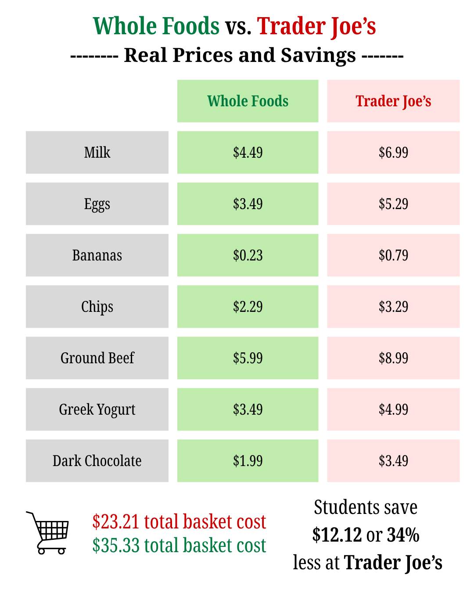
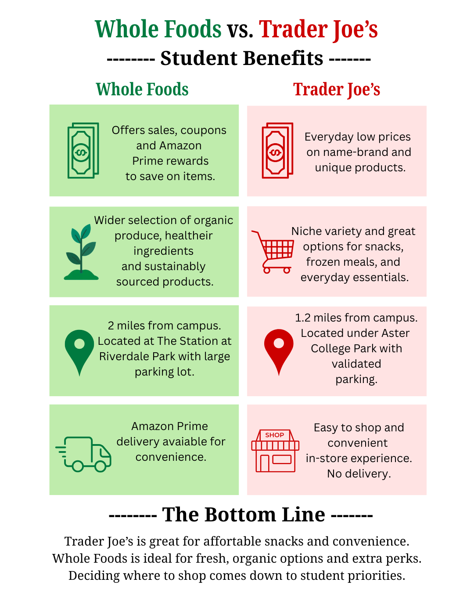

Located just minutes from The University of Maryland campus, both Whole Foods Market and Trader Joe’s are popular grocery stores for students. As food prices rise, the question of how much time and money students are willing to spend on the quality of their groceries rise.
While Whole Foods has a reputation for higher prices and Trader Joe's is known for its name-brand affordable products, a closer look shows the difference is not always clear for customers that are searching to balance cost, quality and convenience.
A comparison of common grocery items, including dairy, produce, specialty snacks and frozen meals, show that Trader Joe’s offers lower prices and a niche variety while Whole Foods provides a larger
These differences can shape how much students spend and the types of foods they buy.
“I do most of my grocery shopping for produce and everyday things at Whole Foods, but if I want a specialty snack, I'll go to Trader Joe’s,” sophomore marketing major Katie Schreiber said.
Whole Foods often offers sales, coupons and loyalty programs through its partnership with Amazon, allowing students to save money on certain items.
However, Trader Joe’s, according to its website, does not have sales, offers coupons or has loyalty programs because they “know that maintaining their everyday focus on value is vital.”

Whole Food's Location
Trader Joe's Location
Location and accessibility is another factor that plays a role in students' decisions. Both stores are located near UMD with Trader Joes being on the outskirts of campus and Whole Foods being a five minute drive away.
“I go to Trader Joe’s because it's convenient and easy for me to navigate once I'm inside,” finance major sophomore Kelly Ren said. “Whole Foods can feel a little intimidating when walking in because there are so many products.”
Transportation options and proximity to dorms and apartments can impact where students grocery shop. Students living in dorms with limited kitchen access may prioritize ready-to-eat or frozen options, which Trader Joe’s is known for carrying.
“Trader Joe’s absolutely has a great selection of frozen meals, which I used to get a lot when I was living in a dorm,” Schreiber said.
However, students are able to order Whole Foods delivery via Amazon Prime, whereas Trader Joe’s focuses exclusively on in-person shopping.
Another attractive aspect about both stores is that they both have name-brand products with strong branding. Some believe that Whole Foods can be competitive in certain categories, especially when it comes to organic sourced products as a reason they’re willing to spend more.
“I think a lot of our customers are looking for individuals looking for healthier options,” Jocelyn Pineda, a Riverdale Park Whole Foods said.
According to Whole Foods’ website when you walk into their doors, customers will find “vibrant stacks of produce, animal welfare rated meat, Responsibly Farmed and sustainable wild-caught seafood and body care products with ingredients you can trust.”
For many college students, buying groceries comes down to prioritizing certain items over others. Some choose to split their funds between both stores, buying affordable snacks and frozen meals at Trader Joe’s while turning to Whole Foods for fresh produce and healthier options.
As food prices continue to change, students realize there is no store that is better than the other. The decision of what store to shop at comes down to individual preferences, convenience and how much time and money they are willing to spend on quality on their groceries.
